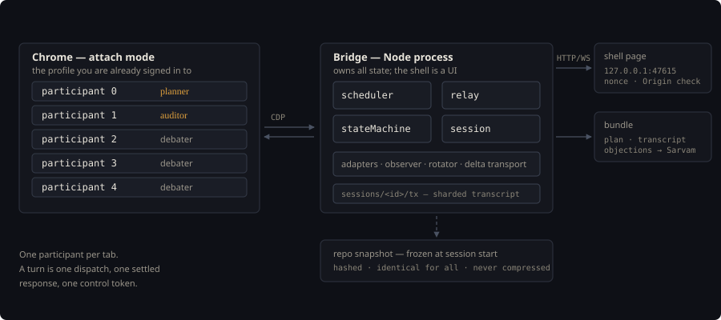

Five models argue.
You get the plan.
A single model reviewing its own plan agrees with itself. This engine puts a planner, an auditor and up to three debaters in five browser tabs you are already signed in to, and runs them through a deterministic token protocol until they agree a versioned plan — or until you decide for them.
Nothing here runs a session yet. The specification is agreed and the first
refactor has landed: bridge/src/runtime.ts became a module directory. The
scheduler, state machine, relay and session registry are specified and mapped to real
line numbers, not written.
What does work is the engine underneath — CDP attachment, five provider adapters, response settling, repo reading — inherited from AI Bridge and green across 34 of 35 suites.
Why a debate, and not a better prompt
Asking one model to check its own work is asking it to disagree with the thing it just produced. Separating the roles, and making the disagreement a first-class artifact, is the whole idea.
Separate the roles
One participant proposes. A different participant, with the code in front of it, looks for what the proposal gets wrong. They do not share a context window, so they cannot quietly agree.
Make the argument an artifact
Every plan revision is a hashed file. Every objection carries a round index and a resolution. The bundle you hand to a builder is the transcript, not a summary of one.
Stop on a rule, not a vibe
Consensus needs every active participant to say so in the same round. One dissenter ends the session in your queue instead of being averaged away.
How a session runs
Five participants, one per tab, leased for the session. A turn is one dispatch, one settled response, one control token. The roster is fixed at session start and mutable only between rounds.
Six tokens, one per message
- [[READY]]
- Handshake and reattach only.
- [[REPLY]]
- An ordinary turn.
- [[ASK_USER: q | opts | default]]
- Halt and ask. Immediate.
- [[ESCALATE: one sentence]]
- Extends the round budget, capped at three a session.
- [[OBJECTION: text | severity]]
- Auditor only. Enters the ledger with its round index.
- [[CONSENSUS]]
- Counts only if every active participant emits it in the same round.
The turn loop
// last non-whitespace line, outside any fence settle → sentinel or stop-gone → trust the token → debounce → retry once, then degrade → timeout → STREAM_TIMEOUT round = 7 default turn = 1 dispatch · 1 settle · 1 token complete = last non-degraded, non-blocked speaker
The shape of it
The bridge is the engine and the shell is a page it serves. Nothing important lives in the browser.

What is proven, and what is not
The inherited engine is tested. Everything specific to the debate is specified, reviewed across six drafts, and unbuilt. The distinction matters more than the roadmap.
| Claim | State |
|---|---|
| CDP attach, tab ownership, detach without killing the browser | Proven — 39 checks |
| Response settling by copy-sentinel, stop-button, debounce | Proven — fixtures only |
| Provider adapters against ChatGPT, Claude, Gemini | Unverified — fixtures, never live sites |
| Fastpath replay without typing | Inert — no provider template exists |
| Round scheduler, state machine, relay, session registry | Specified — mapped, not written |
| Repo snapshot ranker with per-file token accounting | Specified — today it is a yes/no gate |
| Served-shell nonce and Origin/Host validation | Specified — required before the shell ships |
| Two participants sharing one provider account | Open — the spec has no account dimension |
Built on AI Bridge
This is not a rewrite. The hard part — driving a signed-in browser tab and knowing when it has finished answering — already exists and is tested.
Reused as-is
cdp/controller.ts— attach, owned tabs, recycle, GCadapters/*— five providers, one frozen contractadapters/observer.ts— the settle signal the token parse depends onadapters/signin.ts— login detection with no request costfastpath/*— template replay, when a template existsrepo/reader.ts— the snapshot provider
Written for the debate
runtime/scheduler.ts— who speaks, when a round endsruntime/stateMachine.ts— fourteen states, per-participant sub-statesruntime/relay.ts— payload, dispatch, token parseruntime/session.ts— registry, leases, tiers, handoffrotation/rotator.ts— moved out of the retired extension tree
Support the work


Free to use, and it stays free
One person's work: no company, no ads, no tracking, no paid tier. If it saved you an afternoon, a contribution keeps the next one coming — any amount, or none.